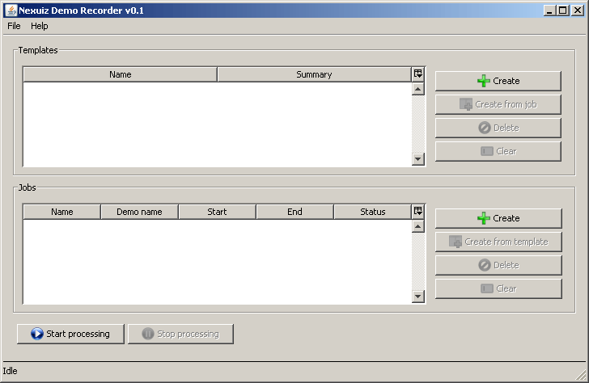
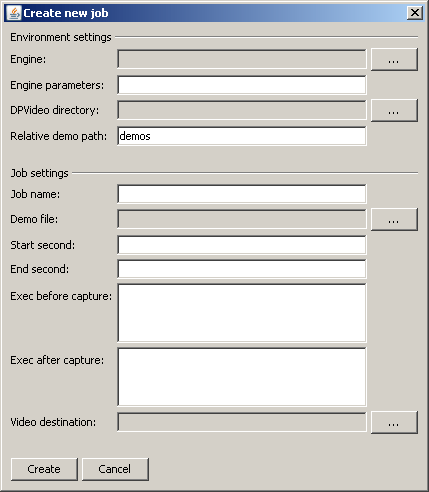

The following images shows the main window:
You will notice that the main window is separated into 4 areas:
The menu bar (File, Help)
The "Templates" area which has a table and 4 buttons on the right
The "Jobs" area which also has a table and 4 buttons on the right
The Start/stop processing buttons
Minimize this demo recorder application for a moment and figure out which demo(s) you actually want to record. Once you know the names of the demo files, you have to figure out the start time and end time (when you want the recording process to start and end). You have to be aware that the Nexuiz demo recorder needs a value in seconds. The problem is that there are 2 different kinds of values.
The first one is the one you see in your HUD in the top right corner. This value is not useful for the Nexuiz demo recorder, because the time is shown in the <minutes:seconds> format. Also this value will be changed/reset to 0 in case the ready-restart feature was using in the game, which resets the time.
On the other hand there is the absolute time value. It represents the amount of time that passed on the server since the map was loaded. This value will always increase each second, and won't be reset to 0 after a ready-restart call either. This is the value you need for this tool. You can obtain it the following ways
1: There is a sub-folder "tools" in this package which contains a .patch file that allows you to patch the source-code of the Nexuiz 2.5.2 engine. What this patch does is to add a new variable "showgametime". Once you patched your source-code and compiled the engine, you can set this variable to 1, and then in the lower right corner you will see the current game time. Please note that I cannot help you with patching the sources and compiling the engine. For Microsoft Windows users I put the Nexuiz binary (darkplaces.exe) into the package as well, so you can use this one (copy it into your Nexuiz directory)
2: If the demo was recorded with Nexuiz 2.5 or newer you can obtain the time values by opening the console and entering this: prvm_global client time
3: If the demo was recorded with a Nexuiz version older than 2.5, just pause the demo at the desired moment, open the scoreboard (by default: hold tabulator key). The scoreboard will show you the current time in <minutes>:<seconds>. Calculate the time using a calculator (time = minutes * 60 + seconds)
Make sure that you know the demo file name, start and end time, then open the Nexuiz demo recorder tool again
In the "Jobs" panel, click on the +Create button. A new dialog will open which asks you for all different kinds of things:
Engine: click on the ... button and specify the Nexuiz engine that should be used for recording
Engine parameters: Only fill this out if you already know what it means. Examples include to execute a particular config (+exec someConfig.cfg), or set a special directory (-userdir option) so that your Engine will use a different set of configs
DPVideo directory: here you have to specify the path where your Nexuiz usually creates new .avi or .ogv files. This is one of the items where you will see that it is required that you already have recorded demos previously. Usually the path will be Nexuiz/data/video (on Windows) or ~/.nexuiz/data/video
Relative demo path: This is the path that is being used within the virtual file-system of Nexuiz in order to find your demo. Normally, when starting a demo by hand, you would enter something like "playdemo demos/stormkeep_demo.dem", because usually demos are stored in the directory "demos". In case you changed that (e.g. If the demo is in a sub-directory of the demos directory), make sure to put this into the field. But usually you won't have to change the value (demos) to anything else. Just leave it as it is.
Job name: Here you can specify a name for this job. If you don't specify any name, a name will be automatically chosen, using the format "Job x", where x is a index number.
Demo file: obviously you have to specify the demo file here
Start second and end second are self-explanatory
Exec before capture: Here you have the chance to enter console commands (that is, commands that you could otherwise also enter into the console of the game). One example could be to execute a config here that will make sure that the HUD is hidden. Or you might want to change the FPS for the rendered video by setting cl_capturevideo_fps to another value. If you want to put several commands in here you can either separate them by a new-line, or by ; (semi-colon)
Exec after capture: works like the "exec before capture" field. Can be used for anything, e.g. Restoring settings that you altered in the exec before field.
Video destination: Here you have to specify where you want the recorded video file to be moved once the recording process is done. Please note that you have to enter a name for the file, however you should not enter the extension (.avi or .ogv). You don't have to, because the Nexuiz demo recorder will automatically figure out whether the Nexuiz engine generated an avi or ogv file, and will keep its ending when moving the file to its destination.
Once you filled out all fields, click on create. In case you did something wrong with one of the fields, you will hopefully get an error message immediately, which allows you to correct the mistake. If nothing was filled out incorrectly the dialog should close and you should now see a "Job 1" in the job queue.
In order to edit a job, either double-click on it, or right-click it and click on Edit
Now that you have setup your first job, click on the Start processing button. After a short moment you should see Nexuiz opening. Don't be surprised if the "Loading" image appears for a long time. What you don't see is that Nexuiz is fast-forwarding your demo to the start time you specified, which can take some time. After that, once Nexuiz started and finished recording the stuff you wanted it to record, it should close automatically. The demo recorder should show you a new message dialog that it finished recording all jobs. The "Status" column of your first job should now be showing "done".
In case something went wrong, the status column of your job will show "error" (in the jobs table). In order to find out what the problem was, right-click on the job and click on "Show error message". The message dialog that pops up will hopefully help you to figure out what went wrong. If it is something that you think you can fix, do so (by editing the job settings), then right-click the job again and click on "Reset job status to waiting". This will set the status of the job to "waiting" again.
You need to be aware that once you click on the Start processing button only the jobs with status "waiting" will be put into a queue and will be executed one after another. All other jobs (with status "error" or "done" will not be started. If an error occurs while processing one of the jobs this job will set its state to "error" and the next job in queue will be executed. That is, the behavior of the Nexuiz demo recorder is to continue working even if one or more individual jobs failed.
In case you already have a job list with several jobs but you want to just record one particular job (even though all other jobs also have the state "waiting"), just right-click on the particular job and click on "Start job". Note that this only works if the Nexuiz demo recorder is currently not working on any other jobs.
Congratulations, you managed your first steps using this program. You should read the other help chapters as well in order to be able to fully utilize the functionality of the program.